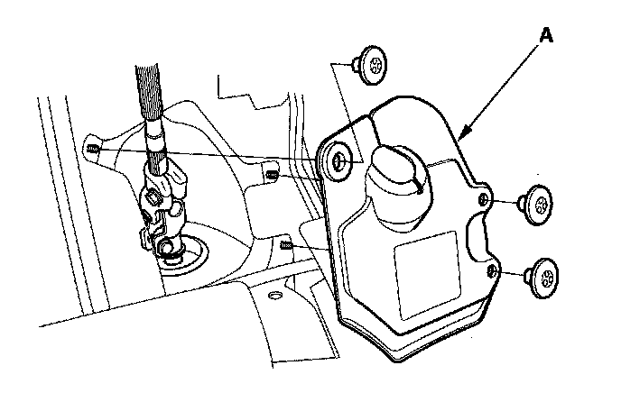
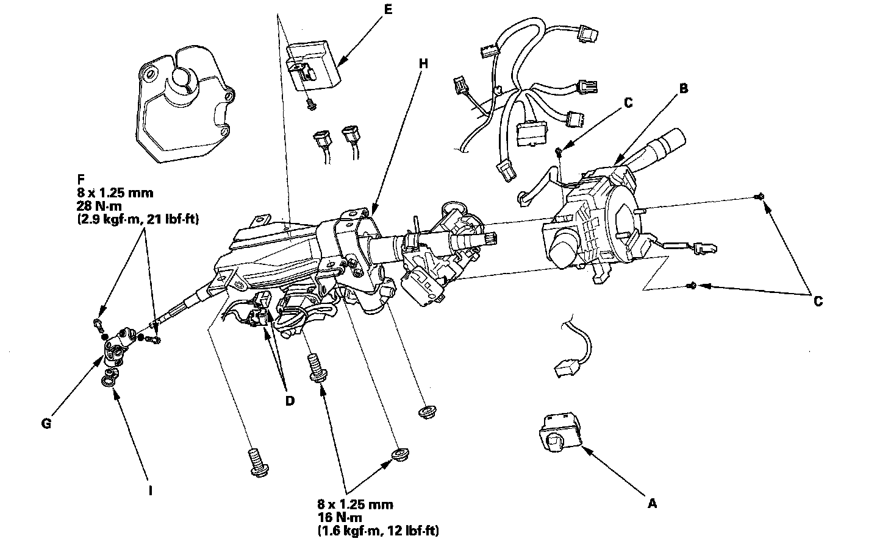
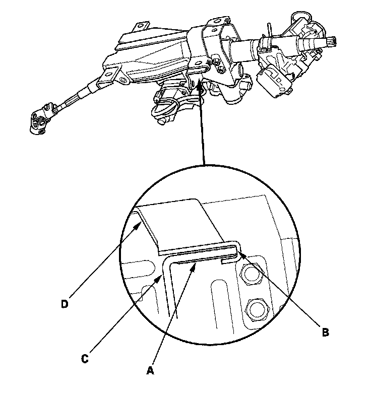
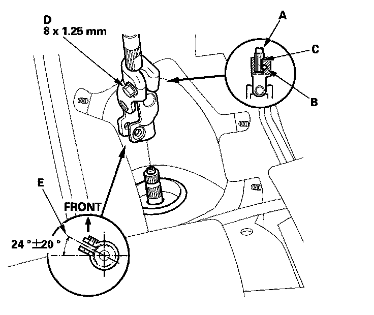
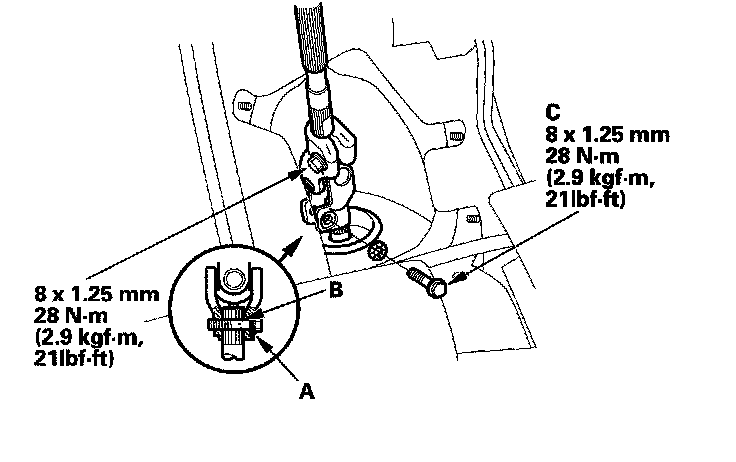
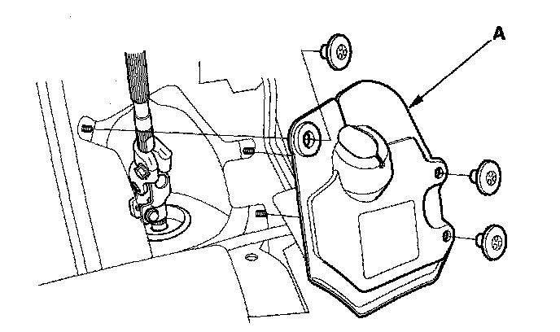

Steering Column Removal and Installation
Steering Column Removal and InstallationSRS components are located in this area. Review the SRS component locations and the precautions and procedures before doing repairs or service.
Removal
1. Make sure you have the anti-theft codes for the audio system and the navigation system (if equipped).
2. Adjust the steering column to full tilt down position, and to the full telescopic out position.
3. Make sure the ignition switch is OFF, then disconnect the negative cable from the battery.
4. Remove the driver's airbag assembly and the steering wheel.
5. Remove the driver's dashboard undercover.
6. Remove the steering joint cover (A).

7. Remove the upper column cover and disconnect the connectors from the power tilt/telescopic switch (A).

8. Disconnect the wire harness connectors from the combination switch assembly (B).
9. Remove the combination switch assembly from the steering column shaft by removing the three screws (C).
10. Disconnect the connectors from the ignition switch, and release the wire harness clips from the steering column.
11. Disconnect the connectors (D) from the tilt/telescopic motors.
12. Disconnect the connectors from the tilt/telescopic control unit (E).
13. Remove the steering joint bolts (F) then disconnect the steering joint (G) from the pinion shaft and the steering column shaft.
14. Remove the steering column (H) by removing the attaching nuts and bolts.
15. Remove the center guide (I) (if equipped) from the top of the pinion shaft, and discard it. The center guide is for factory assembly use only.
Installation
1. Install the steering column in the reverse order of removal, and note these items:
^ Take care not to let the sliding plates (A) fall out of position during column installation.
^ Make sure the wires are not caught or pinched by any parts.
^ Make sure that there is no gap (B) between bracket (C) sliding plates, and absorbing plate (D) once column is mounted in place and fixing bolts and nuts are tightened.

2. Center the steering rack within its stroke.
3. Insert the upper end of the steering joint onto the steering shaft (A) (line up the bolt hole (B) with the flat portion (C) on the shaft) and loosely install the upper joint bolt (D).

4. Slip the lower end of the steering joint onto the pinion shaft taking care to align the gap (E) within the angle.
5. Align the bolt hole (A) on the steering joint with the groove (B) around the pinion shaft then loosely install the lower joint bolt (C).

6. Pull on the steering joint to make sure that the steering joint is fully seated, then tighten the lower joint bolt to the specified torque.
7. Tighten the upper joint bolt to the specified torque.
8. Install the steering joint cover (A).

9. Install the steering wheel.
10. Reconnect the negative battery cable to the battery, and do these tasks:
^ Turn the ignition switch ON (II); the SRS indicator should come on for about 6 seconds and then go off.
^ Enter the anti-theft code for the audio system and the navigation system (if equipped).
^ Make sure the horn and turn signal switches work properly.
^ Make sure the steering wheel switches work properly.
^ Make sure the steering wheel is centered.
^ Do the steering column position memorization.